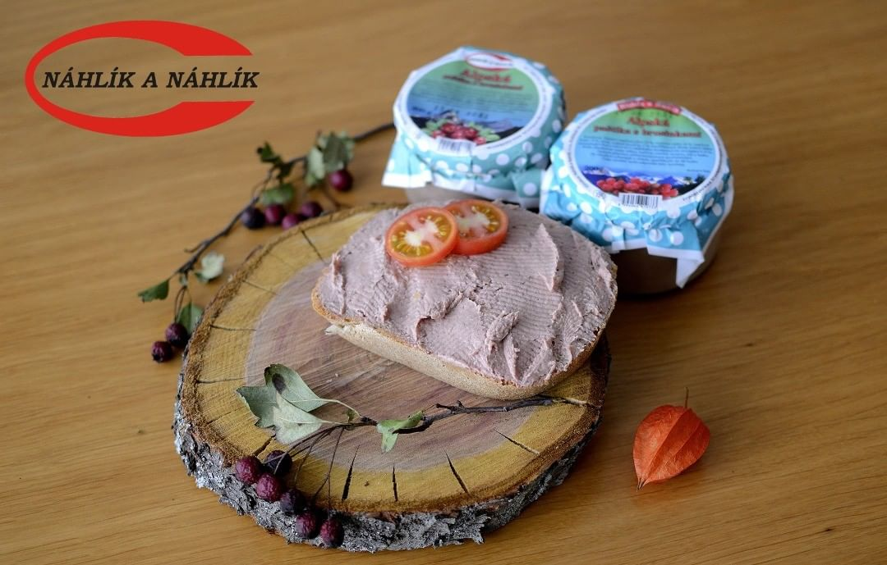

Guláše podľa @nahlikanahlik — Normy Jedál
Milí fanoušci, povězte nám, jestli a jak se změnila forma vašich nákupů potravin během pandemie? Chodíte nakupovat potraviny méně často nebo omezujete čas strávený v obchodě? Nakupujete potraviny přes eshop nebo donáškové služby? Snažíte se podporovat lokální prodejce? Dejte nám vědět do komentáře, co se u vás změnilo.
My můžeme říct, že nákup pomocí našeho eshopu www.nahlikovi.cz využíváte stále více. Jsme rádi, že tuto formu nákupu oceňujete a vážíme si každé objednávky.
#jidlo #food #polevky #pastiky #hotovky #masovespeciality #nahlikanahlik #gulase #tradice #chut